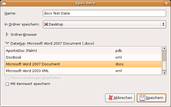

Word2007
Archivierte Anleitung
Dieser Artikel wurde archiviert, da er - oder Teile daraus - nur noch unter einer älteren Ubuntu-Version nutzbar ist. Diese Anleitung wird vom Wiki-Team weder auf Richtigkeit überprüft noch anderweitig gepflegt. Zusätzlich wurde der Artikel für weitere Änderungen gesperrt.
Zum Verständnis dieses Artikels sind folgende Seiten hilfreich:
Office Open XML ist das neue Dateiformat für Microsoft Office (ab Office 2007), welches augenblicklich von OpenOffice.org unter Ubuntu nicht direkt unterstützt wird. Der entsprechende Konverter muss derzeit manuell nachinstalliert werden. Beispiele für Office Open XML Formate sind *.docx, *.xlsx und *.pptx. Mit der folgenden Anleitung lassen sich vorerst lediglich die *.docx-Dateien öffnen, bearbeiten und speichern.
Installation¶
Zuerst ist die Datei odf-converter-1.0.0-5.i586.rpm von der Novell-Homepage  herunterzuladen.
herunterzuladen.
Die weitere Installation erfolgt nun auf einem Terminal [2]. Nun wechselt man in das Verzeichnis, in dem die heruntergeladene Datei liegt. Anschließend wird das Paket odf-converter-1.0.0-5.i586.rpm mit Hilfe von Alien [3] in ein tgz-Archiv umgewandelt:
sudo alien --to-tgz --scripts odf-converter-1.0.0-5.i586.rpm
Die soeben erstellte Datei odf-converter-1.0.0.tgz muss nun entpackt werden [4]. In dem Verzeichnis, in das die Datei entpackt wurde, befinden sich nun drei neue Ordner: usr, opt und install.
Nun müssen nacheinander die drei folgenden Befehle ausgeführt werden, um den Office Open XML-Filter an die richtigen Stellen im System zu platzieren. Die Befehle müssen in dem Verzeichnis aufgerufen werden, in die die oben genannten Verzeichnisse liegen:
sudo cp usr/lib/ooo-2.0/program/OdfConverter /usr/lib/openoffice/program/ sudo cp usr/lib/ooo-2.0/share/registry/modules/org/openoffice/TypeDetection/Filter/MOOXFilter_cpp.xcu /usr/lib/openoffice/share/registry/modules/org/openoffice/TypeDetection/Filter/ sudo cp usr/lib/ooo-2.0/share/registry/modules/org/openoffice/TypeDetection/Types/MOOXTypeDetection.xcu /usr/lib/openoffice/share/registry/modules/org/openoffice/TypeDetection/Types/
Die rpm- und tgz-Datei sowie die oben erwähnten Ordner usr, opt und install können nach erfolgreicher Installation gelöscht werden.
Achtung!
Es wird in diesem Fall zwar kein Fremdpaket installiert, allerdings werden drei Dateien direkt in das Systemverzeichnis /usr/lib kopiert. Dies könnte bei Upgrades auf eine neue OpenOffice.org-Version oder beim Upgrade auf eine neue Ubuntu-Version eventuell zu Problemen beim Upgradevorgang führen. Daher ist es ratsam, die drei Dateien vorher zu löschen und nach dem Upgrade neu zu kopieren.

Bedienung¶
docx-Dateien öffnen¶
Nach dem man OpenOffice.org gestartet hat, wählt man "Datei -> Öffnen..." aus. In dem sich öffnenden Fenster kann man dann die neue Word-Datei auswählen und öffnen.
Leider ist es derzeit nicht möglich, Office Open XML-Dateien direkt zu öffnen. Ubuntu interpretiert das neuartige Officeformat als zip-Datei und folglich werden docx sowie zip-Dateien mit dem Archivmanager geöffnet. Man kann natürlich einstellen, dass docx-Dateien zukünftig immer mit OpenOffice.org geöffnet werden, jedoch versucht Ubuntu dann auch zip-Dateien mit OpenOffice.org zu öffnen, was natürlich nicht funktioniert.
docx-Datei speichern¶
Nach der erfolgreichen Installation des Konverters lässt sich dieser unter "Datei -> Speichern..." Auswählen. Der Konverter heißt: "Microsoft Word 2007 Document". Man sollte sich jedoch gut überlegen, ob man wirklich OOXML als Austauschformat wählt (siehe Problematik) und nicht stattdessen als OpenDocument speichert oder in ein PDF exportiert.
Problematik¶
Microsoft versucht das produktabhängige Office Open XML zum internationalen Standard zu erheben und um in Konkurrenz zu dem bereits verabschiedeten OpenDocument-Standard zu treten anstatt den bestehenden Freien Standard zu implementieren. Kritiker halten das teil-proprietäre Format für ungeeignet, da es dafür entwickelt wurde, als Speicherformat für Microsoft Office-Produkte zu dienen und daher unter anderem binäre Bestandteile enthält, Fehler aus älteren Office-Versionen mitschleppt und sehr auf den angelsächsischen Sprachraum zentriert ist. Es ist wahrscheinlich auch zukünftig mit ärgerlichen Kompatibilitätsproblemen und Schwierigkeiten bei der Umwandlung in andere Formate zu rechnen.
Ikhaya vom 31.08.2007: Schwedens Wahl zum OOXML-Standard für ungültig erklärt
Ikhaya vom 05.09.2007: Das Ende von OOXML? Sicher nicht!
- Erstellt mit Inyoka
-
 2004 – 2017 ubuntuusers.de • Einige Rechte vorbehalten
2004 – 2017 ubuntuusers.de • Einige Rechte vorbehalten
Lizenz • Kontakt • Datenschutz • Impressum • Serverstatus -
Serverhousing gespendet von